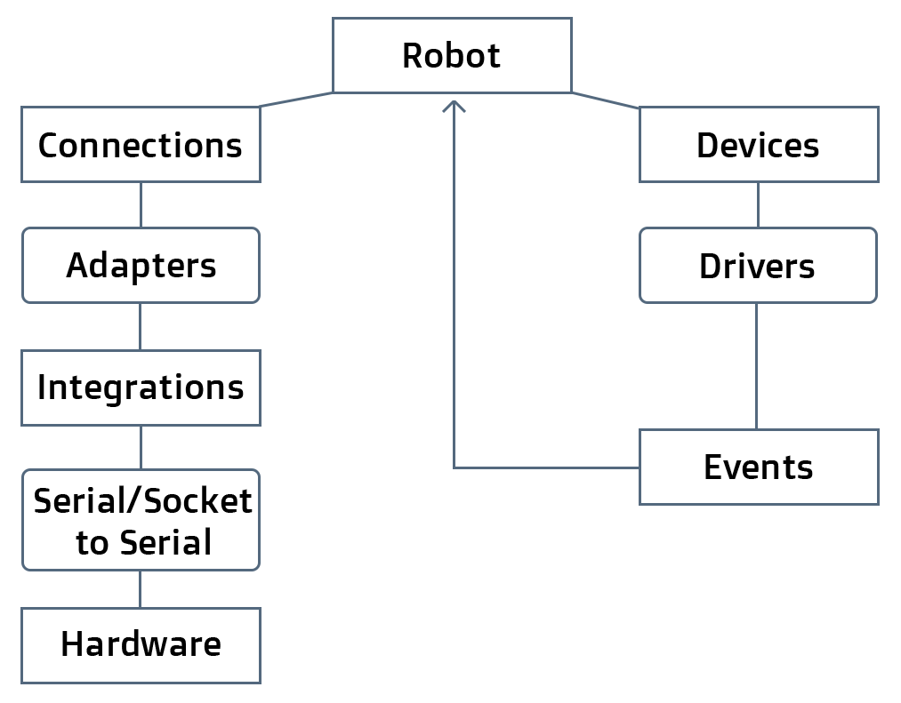

Commander.io
A Universal Remote Control For Robots and the Internet of Things
Good Morning
This is #mobilecampla
I am @deadprogram
Ringleader
@hybrid_group
hybridgroup.com
kidsruby.com
Full Stack Robotics
Full Stack Robotics?

Starring
Also starring
A JavaScript Framework for Robotics & the Internet of Things
Multiple Hardware Devices
Different Hardware Devices
At the Same Time!


Arduino
var Cylon = require("cylon");
Cylon.robot({
connections: {
arduino: { adaptor: 'firmata', port: '/dev/ttyACM0' }
},
devices: {
led: { driver: 'led', pin: 13 }
},
work: function(my) {
every((1).second(), function() {
my.led.toggle();
});
}
}).start();